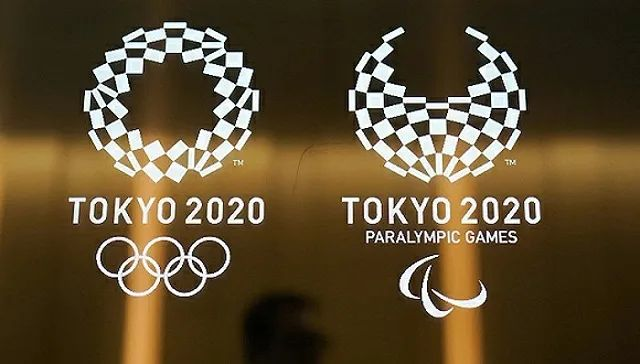

确诊520例！日本疫情升级？东京奥运会没有“B计划”…
原文链接 备份链接 日本国内新冠病毒感染者近日连续增多，一些地方相继报告了无法确定感染途径的病例。日本厚生劳动省昨天（17日）表示，停靠在日本横滨港的“钻石公主”号邮轮又新增了99名新冠肺炎病例，累计已达454例。鉴于形势日益严峻，日本 …

图片来源：视觉中国
记者：罗盈盈
“
这场体育盛会能否如期揭幕依然存在变数。
”
新冠肺炎疫情在日本有愈演愈烈的趋势，原定今年7月揭幕的东京奥运会面临挑战。
2月21日，日本内阁官房长官菅义伟在记者会上强调，东京奥运会和残奥会将如期举行。这是东京奥组委自1月31日以来，第四次发表奥运不会取消的声明。
他表示，结合新冠肺炎扩散的情况，日本政府将切实推进奥运会和残奥会的筹备工作，确保赛事在安心安全的情况下举行，并强调，“国际奥委会相信我们能够妥善应对”。
不过，当前东京奥运会前期的部分相关活动已经被叫停。
据当地媒体报道，鉴于新型冠状病毒肺炎疫情在日本呈蔓延趋势，日本政府在2月21日决定，取消面向东京奥运会的“东道主小镇峰会”。据悉，该活动原定于2月22日在东京都举办。
东道主小镇峰会，是日本政府面向东京奥运会和残奥会准备的一次交流活动，该活动原定召集日本全国各地的自治体，就奥运会中与其他国家的交流事宜进行讨论。如今，日本政府不得不取消这一峰会。
日本厚生劳动省表示，要求活动主办方重新探讨举办聚集性活动的必要性。相关文件指出，如果参加者需要在无法保持足够距离的情况下接触，会提高感染风险，要求各界警惕。
“现阶段，并不是要一律叫停。活动是否举办，最终还是由主办方自己做出判断，”厚生劳动省官员加藤胜信表示，不仅只有停办这一选项，也可选择改日举办。
对于备受关注的东京奥运会和残奥会，他表示，“将关注日本国内的疫情状况，未来再发出相关信息。”
早前，东京奥组委曾强调，“东京奥运会绝对不会取消，我们没有B计划。”
东京方面表示，会采取一切可能的措施来应对疫情带来的威胁。这些措施主要集中在两个方面，一是防止奥组委内部出现感染，以免奥运会筹备工作受到妨碍，二是防止奥运会期间运动员受到感染，为可能出现的感染提出应对预案。
按照原计划，东京夏季奥运会和残奥会，将分别于2020年7月24日-8月9日以及8月25日-9月6日期间举行。
在日本面对严峻疫情之际，2月20日，英国保守党伦敦市长候选人贝利（Shaun Bailey）公开表示，如果新冠肺炎疫情迫使东京奥运会易地举行，伦敦将做好举办的准备。
贝利在社交媒体上写道，“我敦促国际奥委会认真考虑，一旦有需要，伦敦随时准备好主办奥运。我们有所需的设施和经验，如果我当选市长，若需要帮忙，我保证伦敦能再次主办体育界盛事。”
对于贝利的这一言论，日本内阁官房长官菅义伟在记者会上表示，“海外的事情，（日本）政府不予置评。”
尽管伦敦曾举办2012年夏季奥运会，拥有完备的场馆资源和经验条件，但国际奥委会回应称，暂时没有理由进行临时性规划将奥运会取消或易地。
与此同时，世界卫生组织负责突发卫生事件的助理总干事瑞安亦表示，现在判断东京奥运是否延期或停办，仍为时过早。
在伦敦，贝利的表态则受到质疑，外界认为，他的言论是为5月伦敦市长选举造势。
据路透社报道，一名英国体育官员称，伦敦没有接手的计划，“这是一位市长候选人的表态，而非英国或伦敦的态度。”
据日本厚生劳动省和各地方政府的消息，截至当地时间2月20日24时，日本国内累计确诊新冠肺炎病例728例，死亡3例。其中，停靠在横滨的钻石公主号邮轮确诊634例。
实际上，日本体育界已经受到疫情的影响。
近期举办的东京马拉松宣布取消大众参赛，原本报名成功的3万多名大众跑者无缘参赛。而3月份将要进行的多项测试赛，虽然目前没有取消的打算，但已经有部分队伍因为担心疫情而退出。
奥运会的历史上，没有因为公共卫生事件而取消的先例，此前只是在一战和二战期间被取消过三届比赛，东京曾受影响——1940年东京奥运会因二战被取消，直至1964年，东京才首次举办奥运会。
如今，日本即将时隔56年再次举办奥运会，这场体育盛会能否如期揭幕依然存在变数。

原文链接 备份链接 日本国内新冠病毒感染者近日连续增多，一些地方相继报告了无法确定感染途径的病例。日本厚生劳动省昨天（17日）表示，停靠在日本横滨港的“钻石公主”号邮轮又新增了99名新冠肺炎病例，累计已达454例。鉴于形势日益严峻，日本 …
原文链接 备份链接 澎湃新闻记者 刘栋 过去的这个周末，日本的新冠肺炎疫情开始出现一系列变化。 2月16日，日本首相安倍晋三紧急召开专家组会议。厚生劳动大臣加藤胜信在会后的记者会上表示，目前日本的新冠疫情“已经进入到一个新的阶段”。 “我 …
原文链接 备份链接 澎湃新闻记者 南博一 当地时间21日，日本官房长官菅义伟表示，2020年东京奥运会和残奥会将如期举行。 据日本共同社21日报道，菅义伟在21日的记者会上强调，2020年东京奥运会和残奥会将如期举行。他指出，日本政府将结 …
原文链接 备份链接 2月10日，日本东京，2020东京奥运会前瞻，奥运宣传标语亮相东京街头。图片来源：视觉中国 记者：高恺仪 “ 首例病逝确诊患者是一位80多岁的女性。鉴于在中国的经验，新冠肺炎病毒对有基础病的老年人造成的影响更大，老龄化 …
原文链接 备份链接 “ 这是一种拥有40多年历史的巧克力夹心饼干。公司暂定两个工厂停产至3月15日。 ” 由于新型冠状病毒疫情扩大、中国游客数减少导致销售额下降，日本北海道札幌市的点心制造商石屋制果宣布从2月20日起暂停生产主打商品“白色 …